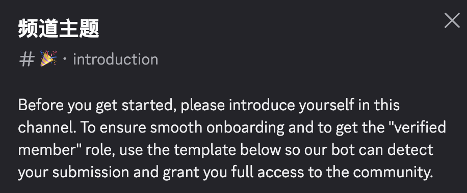
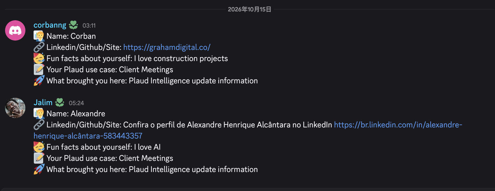
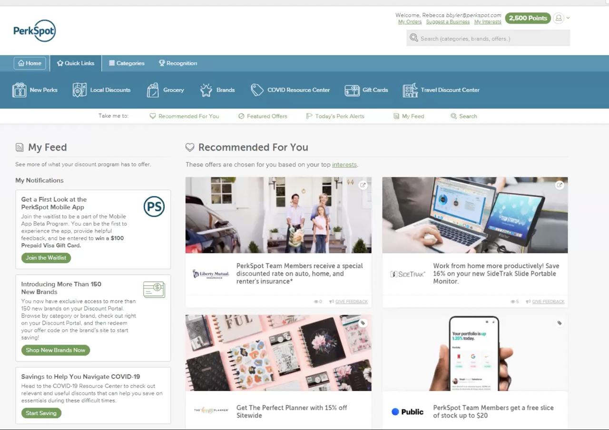

我们提及私域的时候，通常有两种基本理解，一种是品牌自有社群，还有一种是第三方的封闭社群。
我们作为品牌方希望在自有社群建立信任、做价值共创，然后和第三方社群合作去突破细分人群。
1品牌自有
品牌自有社群核心就是信任、口碑、价值共创，主要阵地是 Facebook Group、Discord。
Facebook Group 用户或品牌在里面发帖子、发评论，帖子作为媒体资产可以沉淀下来，配合广告进行进一步传播；像 Insta360、DJI 用户特别多，会按产品系列分不同的 Facebook Group 群维护。
Discord 相当于一个频道制的实时聊天室，核心是即时答疑和技术共创。
Discord 频道中小问题咨询特别多，自发分享解决方案的用户也特别多。社区里分不同频道，有些频道只有品牌能发言，作为统一的喇叭通知窗，有一些频道是供用户自由交流的。
我想分享最近很火的一个 AI 硬件品牌 Plaud，这个产品可以磁吸在手机背面，主打语音记录加 AI 摘要、效率管理，除了硬件需要付费以外，AI 总结等等软件功能按月收订阅费。办公群体里他们紧密合作的是医生、律师、销售。
Plaud 的 Discord 有个很妙的玩法：他们的 #introduction 频道里是强制的发消息模板，必须发姓名、LinkedIn、GitHub 或个人网站、使用场景。机器人识别模板正确才自动解锁全部频道，否则你在其他频道的发言权限是锁住的。


这一步把「提供信息」设成了社群交流的门槛——做了用户职业调研、留下职业 profile、还埋了 B 端线索的可能。而且这种强制仪式在社会学上反而增加了某种圈子的认同，例如 B 站发评论需要答题这种类似的设置。Discord 玩法非常灵活，我目前关注到的主要是 AI 硬件、开源硬件、SaaS 这类品牌的社区比较活跃。
像这种技术类产品的价值共创属性很强，很多用户有产消一体的属性——既是买家又是内容产出者，可能会产出插件等等分享在社群里，愿意无偿分享成果，参与动机是自我实现和社区认同。
我最近还关注到一个墨水屏挂件众筹产品，支持开源，单价五十美金左右，预售约一万件，Discord 在众筹阶段聊天就三千多条了，讨论开源、后期刷固件。这类产品甚至可能不开 Facebook Group，重点运营 Discord 或自建论坛。
2第三方私域
第三方私域一般围绕人群身份建立——妈妈团、学生网络、职工福利平台、行业私会。对于品牌来说，产品定位受众契合某一类人群，就可以去找这类人群聚集的社群。
妈妈团就是我们最常说的 Facebook 折扣群组。不管美国还是中国，这类折扣群组常被叫妈妈团，主体是妈妈和家庭采购人群。合作方式就是折扣加佣金或一口价，群主在群里分发推荐，借群里的信任关系带动转化。
学生网络最有名的就是 Student Beans。学生免费注册、验证学生身份，然后解锁品牌专属折扣码。平台盈利靠几个部分：学生成交下单，平台获得来自品牌方的佣金；付费推广的邮件、Push、广告位；还有一块卖 SaaS 插件，叫 Beans iD。
很多学生在 Student Beans 上注册了账号，认证了自己某某大学学生的身份，Student Beans 就有这样一个数据库。Shopify 品牌站可以把 Beans iD 嵌入品牌自己站里，然后在结算的触点上提醒学生可以通过这个服务认证学生身份获得额外优惠，达到促单的作用。
职工福利平台像 Perkspot、Beneplace，和世界五百强公司签协议给员工产品优惠，品牌入驻收入驻费和佣金。里面最热销的还是 big name 类，比如苹果电脑、戴尔电脑、星巴克等等。Plaud 这种强办公硬件就非常适合，他们和这类平台合作，并且通过这个渠道拿到了 B 端线索，促成了 B 端成交。

行业私会可以理解成更细分的职工福利平台。还是以 Plaud 为例，他们的人群是医生、律师、销售。他们和日本、美国的医学协会达成了赞助合作和分销合作。
ibaho.jp/member-benefits/plaud ↗
这些协会会员权益是保险大幅优惠、期刊免费读、研讨会免费参加，还有消费品折扣，星巴克、麦当劳、苹果这些 big name 都在名单上。协会盈利一是靠会员费——医生入会要月或年订阅费；但最大资金来源还是广告赞助。
以上这些第三方私域，都是强营销属性的渠道，品牌通过福利优惠渗透人群不会引起很大的反感。
具体的品牌自有私域如何运营，如何找到适合的私域阵地又是一个课题了。